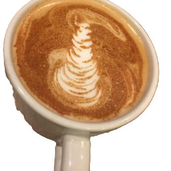
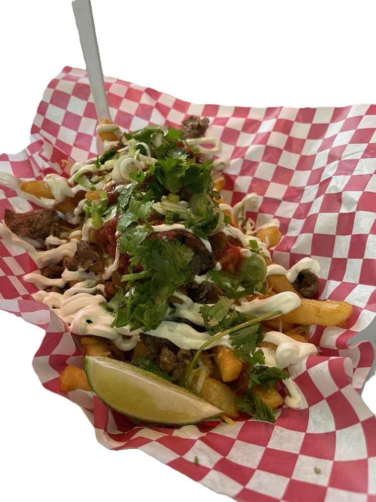

Catawba County Cuisine

Catawba County isn’t just about lakes and mountains—it’s also a hidden gem for food lovers who crave something a little different. Start your day at one of the local coffee shops, where the brew is strong, the pastries are fresh, and the vibe is always cozy. But the fun doesn’t stop there! For the more adventurous eaters, Catawba’s got a quirky mix of odd Japanese delicacies—think everything from savory takoyaki to perfectly crispy tempura that’ll make you feel like you’ve stepped into an Osaka street market. And for those nights when you want to dine in style, Catawba has fine dining spots that elevate the experience with stunning dishes, elegant ambiance, and flavors that’ll have you savoring every bite. Whether you're after a casual cup of joe, a culinary adventure, or an upscale meal, Catawba County has it all!
This Weeks Featured Dishes!
Fourke

Ahi & Avocado
Ahi tuna, avocado, ginger, green onions, pickled carrots, served on crispy wontons with spicy aioli and cilantro olive oil. $14.00
Address: 1410 4th Street Dr NW, Hickory, NC 28601
Website: https://www.fourkrestaurant.com/
Phone Number: (828) 855-3437
Cowa Sake

Yakitori
Four skewers of personal choice, to be cooked to your own satisfaction on a table side grill, fueled by Binchotan white oak coals, & served with spicy potsticker sauce. $20
Address: 1 North Center St, Suite 250, Hickory, NC, 28601
Website: https://cowa-sake.com/
Phone Number: (828) 475-7714
Taste Full Of Beans

Butter Pecan Latte $5.50
Address: 29 2nd Street NW, Hickory, North Carolina 28601
Website: https://www.tastefullbeans.com/
Phone Number: (828) 325-0108
Bubbly's

Asada Fries
Carna Asada, beef, cheese, salsa, sour cream, cilantro, green onion. $7.25
Address: 2101 Catawba Valley Blvd SE, Hickory, NC 28602
Website: N/A
Phone Number: (828) 527-8975